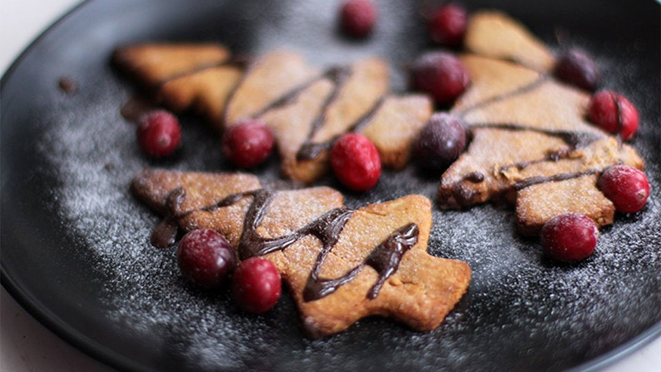

Vegan Christmas Protein Cookies

Description
Vegans and gluten-free eaters, rejoice! 'Tis the season to partake in holiday goodies.
Ingredients
- 3 tbsp natural peanut butter
- ¼ cup ground almonds
- ⅛ cup pea protein powder
- 1 tbsp agave syrup
- 1 tsp ground ginger
- ½ tsp allspice, ground
Directions
- Blend all ingredients until you achieve cookie-dough consistency. Taste to ensure you've achieved your desired level of sweetness. Adjust accordingly.
- Roll your cookie dough into a nonstick cookie tray, and cut out your Christmas shapes with a cookie cutter (think trees, snowmen, and Santas).
- Bake at 340 degrees F (170 C) for 10-12 minutes or until the cookies are golden brown.
- Now comes the most important step: Allow the cookies to cool completely. If you try to eat them before they've cooled, they'll crumble, and your effort will be for naught.
- If you want to decorate your cookies, add some melted dark chocolate, calorie-free chocolate syrup, cocoa powder, shredded coconut, or whatever toppings you fancy the most!
- Note(s): You can substitute cashew or almond butter. You can substitute vanilla or unflavored protein. You can substitute coconut milk. Ground ginger and allspice or pumpkin pie spice is optional.